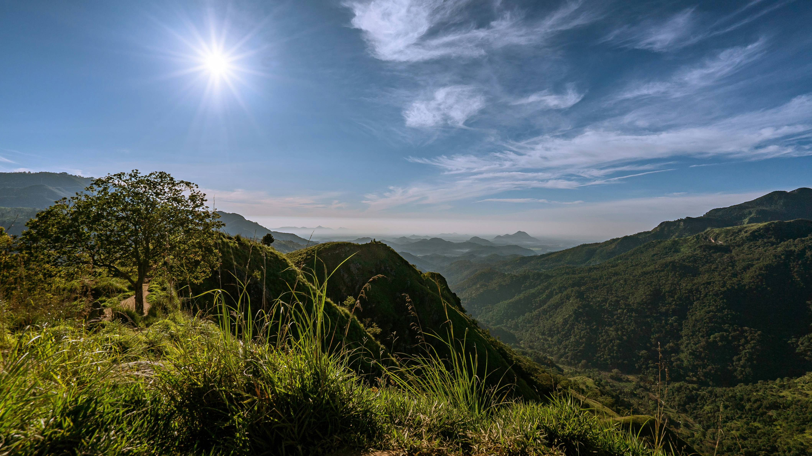
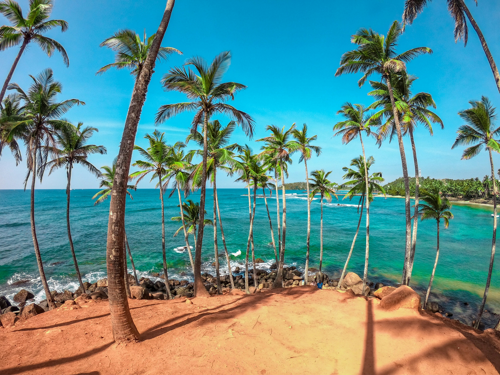
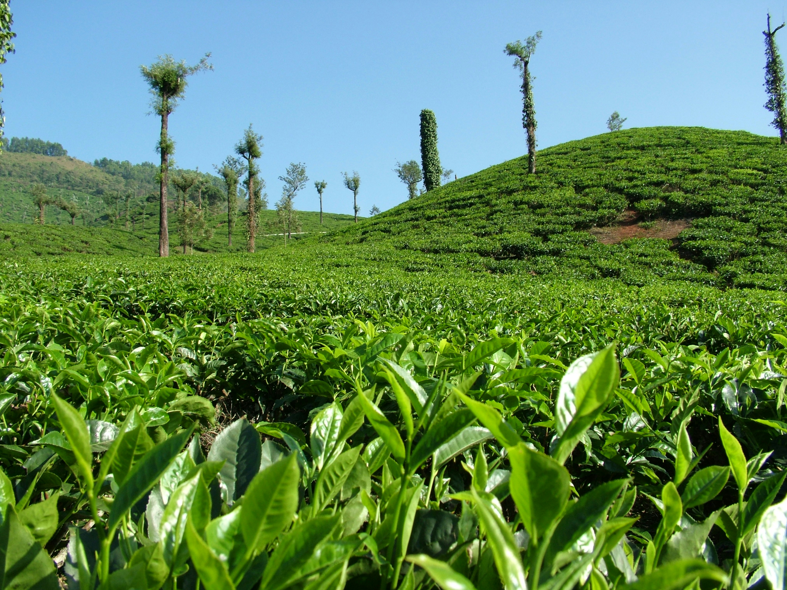
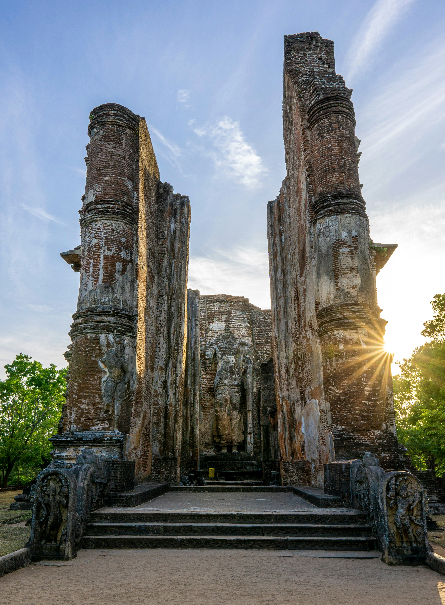
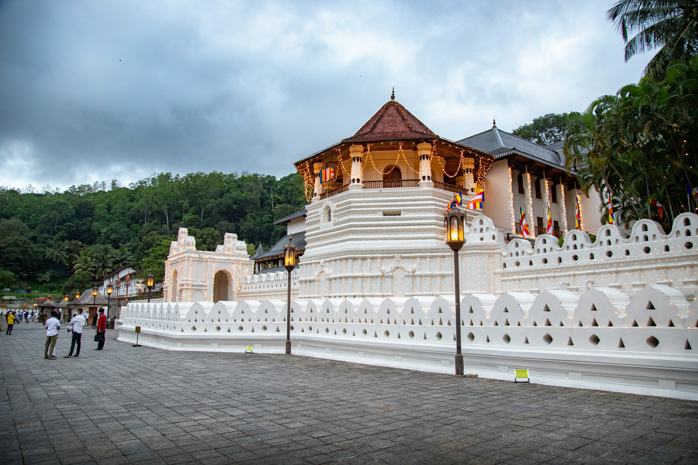
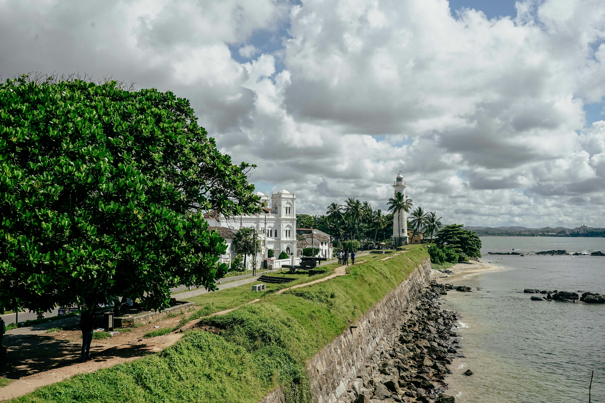

Sri Lankan
Sri Lankan
Pearl of the Indian Ocean
A gem in the heart of the Indian Ocean — nature's artistry, the depth of history, and the warmth of its people will leave you in wonder.
Sri Lanka Districts
Sri Lanka is divided into 9 provinces and 25 districts. Each district has its own unique character, history, and culture.
Watch & Explore
Discover the beauty of Sri Lanka through the eyes of local and international creators
Photo Gallery
The diverse beauty of Sri Lanka — highlands, ocean beaches, ancient cities, and lush tea estates







My Travel List
Click the button on any district card to add it here. Rate it, mark it visited, and add your own notes.
Your travel wishlist is empty.
Click the heart button on district cards to start adding places!